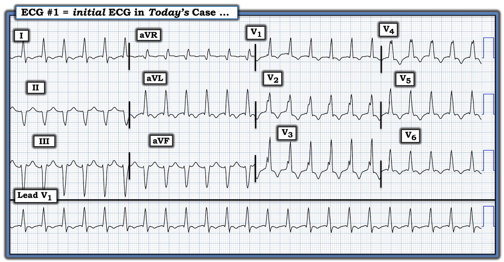
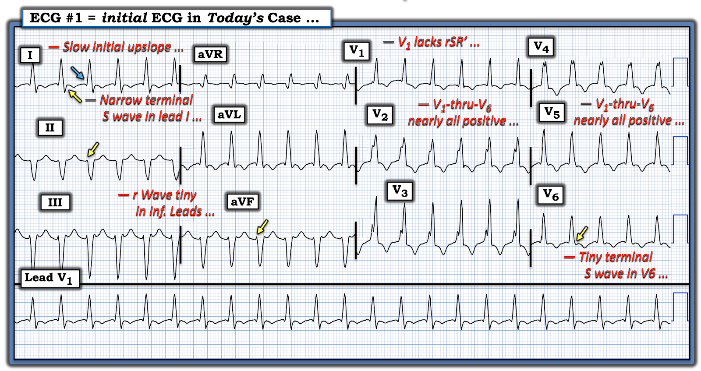
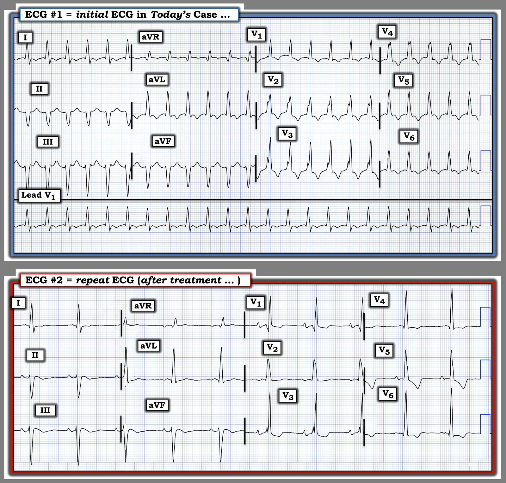

ECG Blog #545 — Nhịp này có phải VT không?
Điện tâm đồ trong Hình 1 được ghi ở một người đàn ông ngoài 60 tuổi — đến khám vì tiền sử hồi hộp đánh trống ngực tái phát trong vài năm qua. Bệnh nhân ổn định huyết động với nhịp này.
- Trước khi khởi phát các đợt hồi hộp đánh trống ngực này — bệnh nhân vẫn khỏe mạnh, không có bệnh lý nội khoa nào.
- Đáng lưu ý — gần đây bệnh nhân xuất hiện phù cổ chân kèm khó thở khi gắng sức tăng dần.
CÂU HỎI:
- Bạn diễn giải nhịp trong Hình 1 như thế nào?
- Bệnh cảnh lâm sàng nào được gợi ý từ tiền sử trên?


Suy nghĩ của tôi về CA BỆNH hôm nay:
Như vẫn thường được ôn lại trên ECG Blog này — tôi ưa dùng Cách tiếp cận Ps,Qs,3R để đánh giá các nhịp nhanh (Xem ECG Blog #185 — để ôn lại hệ thống này).
- Nhịp trong Hình 1 đều (Regular) với tần số (Rate) ~150/phút.
- QRS rộng (tức là ≥0.12 giây).
Về thông số thứ 4 và thứ 5 trong Ps, Qs và 3Rs:
- Không có sóng P — theo định nghĩa, điều đó nghĩa là không có liên hệ (Relation) giữa sóng P với các phức bộ QRS lân cận (vì không có sóng P).
Nhận định: Điện tâm đồ trong Hình 1 cho thấy một WCT đều (nhịp nhanh QRS rộng — Wide-Complex Tachycardia) tần số ~150/phút.
- Về mặt thống kê ở một người lớn từ độ tuổi nhất định trở lên — chúng ta bắt đầu từ thực tế rằng 80-90% các nhịp WCT đều không có sóng P xoang rốt cuộc sẽ là VT. Vì vậy — Hãy coi là VT cho đến khi chứng minh được điều ngược lại. Điều trị bệnh nhân theo hướng đó.
- Dù vậy, vì bệnh nhân này đang ổn định huyết động — bạn có ít nhất một chút thời gian để xem kỹ hơn nhịp này, tìm các đặc điểm có thể làm tăng (hoặc giảm) khả năng chẩn đoán vốn là 80-90% rằng nhịp này là VT.
Như đã minh họa trong ECG Blog #544 tuần trước — trong số những đặc điểm điện tâm đồ tiết kiệm thời gian và hữu ích nhất mà tôi tìm kiếm có các đặc điểm sau:
- Trục mặt phẳng trán trong nhịp WCT.
- Các dấu hiệu khác có thể có của hoạt động nhĩ.
- Hình dạng QRS.
===============================
Xem kỹ hơn Hình 1 ...
Trong ca hôm nay — cả trục mặt phẳng trán lẫn việc tìm dấu hiệu hoạt động nhĩ đều không giúp đưa ra câu trả lời:
- Mặc dù trục mặt phẳng trán trong nhịp WCT lệch trái rõ rệt — trục này không thỏa định nghĩa của tôi về trục "cực độ" (vì QRS không âm hoàn toàn ở chuyển đạo I hay chuyển đạo aVF). Thay vào đó — có một sóng lệch dương khởi đầu (sóng r) nhỏ-nhưng-chắc-chắn-có-mặt ở chuyển đạo aVF. Do đó — việc đánh giá trục mặt phẳng trán không đủ sức phân biệt để có ích.
- Tôi không thấy dấu hiệu rõ ràng nào của hoạt động nhĩ trong Hình 1. Vì vậy, đặc điểm này không giúp gì cho việc xác định nguyên nhân của nhịp hôm nay.
Hình dạng QRS trong WCT:
Chỉ còn lại việc đánh giá hình dạng QRS với hy vọng nâng khả năng thống kê vượt quá mức 80-90% mà ta có ngay từ đầu chỉ nhờ biết rằng nhịp hôm nay là một WCT đều không có dấu hiệu rõ ràng của sóng P xoang.
- Như đã nhấn mạnh trong ECG Blog #211 — khả năng một nhịp WCT rốt cuộc là nhịp trên thất sẽ tăng đáng kể NẾU — ta chứng minh được hình dạng QRS là điển hình cho một trong các dạng blốc dẫn truyền đã biết (tức là RBBB, LBBB, LAHB hoặc LPHB; hoặc RBBB kèm một trong các blốc phân nhánh này).
ĐIỂM THEN CHỐT (PEARL) #1:
Thực thể VT phân nhánh (fascicular VT) là một ngoại lệ đối với quy tắc chung rằng khi một WCT đều giống blốc hai phân nhánh — thì nhịp đó nhiều khả năng là nhịp trên thất. Lý do — là theo định nghĩa, “VT phân nhánh” sẽ giống một trong các dạng blốc phân nhánh (tức là RBBB/LAHB hoặc RBBB/LPHB).
- MẤU CHỐT để nhận ra rằng một nhịp WCT đều có phần giống kiểu dẫn truyền rbbb (kèm trục lệch trái hoặc lệch phải rõ rệt) ít có khả năng là nhịp trên thất — là có một số đặc điểm không điển hình cho dẫn truyền rbbb kèm LAHB hoặc LPHB.
- Xin nhấn mạnh: hình dạng QRS không phải là một khoa học hoàn hảo. Ngay cả với người giỏi nhất — không có gì là hoàn hảo (tức là Luôn có khả năng sẹo cũ do bệnh cơ tim hoặc nhồi máu trước đó sẽ tạo ra một bản ghi nền bất thường rõ rệt khi đang nhịp xoang).
- Điều này đưa ta tới thực tế lâm sàng là trong phần lớn trường hợp — ta sẽ phải bắt đầu điều trị một WCT đều trước khi biết chắc nguyên nhân của nhịp đó. Dù vậy — tôi thấy hữu ích khi biết được xác suất tương đối của VT so với một dạng nhịp SVT nào đó trước khi cân nhắc các lựa chọn điều trị.
===============================
Hãy XEM lại điện tâm đồ ban đầu hôm nay:
Tôi đã đưa lại điện tâm đồ ban đầu hôm nay trong Hình 2.
- Hình dạng QRS trong nhịp WCT ở Hình 2 có giống một trong các dạng blốc dẫn truyền đã biết không?
TRẢ LỜI:
CÓ — Điện tâm đồ ban đầu hôm nay trong Hình 2 quả thật giống dạng blốc hai phân nhánh RBBB/LAHB. Dù vậy, như tôi gợi ý dưới đây trong Hình 3 — có một số đặc điểm không điển hình:
- ĐIỂM THEN CHỐT (PEARL) #2: Mặc dù khả năng dẫn truyền rbbb được gợi ý bởi QRS dương hoàn toàn ở chuyển đạo V1 — lại thiếu hình dạng rsR' ba pha (tức là có sóng s đi xuống dưới đường nền, theo sau là sóng R’ tận cao hơn kiểu "tai thỏ" bên phải ở chuyển đạo V1).
- Như đã bàn chi tiết trong ECG Blog #211 — tuy không phải mọi bệnh nhân RBBB đều nhất thiết biểu hiện hình dạng rsR' ba pha kinh điển — nhưng dấu hiệu sóng R một pha dương hoàn toàn mà ta thấy ở chuyển đạo V1 trong Hình 3 có thể hoặc là kết quả của dẫn truyền rbbb trên thất, hoặc cũng có thể là VT. Vì vậy — sự giống dẫn truyền rbbb mà ta thấy ở chuyển đạo V1 không giúp phân biệt SVT với VT.
- ĐIỂM THEN CHỐT (PEARL) #3: Đặc điểm đặc trưng còn lại của dẫn truyền rbbb là có sóng s tận rộng ở các chuyển đạo bên I và V6. Và mặc dù trong Hình 3 ta có thấy sóng s tận ở cả chuyển đạo I và V6 (các mũi tên VÀNG ở các chuyển đạo này) — sóng s tận này hẹp ở chuyển đạo I và rất nhỏ ở chuyển đạo V6.
- ĐIỂM THEN CHỐT (PEARL) #4: Hình ảnh điển hình của dẫn truyền lahb — là có sóng rS (ưu thế âm) ở mỗi chuyển đạo thành dưới. Và mặc dù có sóng r khởi đầu ở các chuyển đạo II,III,aVF — các sóng r khởi đầu này cực kỳ nhỏ ở chuyển đạo II và aVF (các mũi tên VÀNG ở các chuyển đạo này) — đây không phải là hình ảnh điển hình của hình dạng QRS khi dẫn truyền lahb.
- ĐIỂM THEN CHỐT (PEARL) #5: Véc-tơ khử cực khởi đầu thường nhanh khi dẫn truyền trên thất (vì hoạt động điện, một khi tới tâm thất — bắt đầu bên trong hệ His-Purkinje). Ngược lại — độ dốc của véc-tơ khử cực khởi đầu thường chậm hơn khi là VT (vì hoạt động điện bắt đầu xa hệ dẫn truyền — từ bên trong cơ thất).
- Thay vì một sườn lên thẳng đứng hơn — sóng R ở chuyển đạo I đi lên chậm hơn so với tôi dự đoán nếu là dẫn truyền trên thất (mũi tên XANH ở chuyển đạo này).
- ĐIỂM THEN CHỐT (PEARL) #6: Một đặc điểm hình dạng kém nhạy nhưng rất đặc hiệu cần biết khi đánh giá nhịp WCT — là NẾU có dương toàn bộ (global positivity) hoặc âm toàn bộ (global negativity) ở cả 6 chuyển đạo ngực (tức là các chuyển đạo V1-đến-V6 đều dương hoặc đều âm) — thì nguyên nhân của nhịp gần như chắc chắn là VT.
- Sẽ có dương toàn bộ ở các chuyển đạo V1-đến-V6 trong Hình 3 — nếu không có các sóng s rất nhỏ, từng lúc xuất hiện ở chuyển đạo V2; và ở các chuyển đạo V4,V5,V6. Các sóng s rất nhỏ này làm giảm độ đặc hiệu của dấu hiệu này đối với VT (dù vậy hình dạng QRS ở chuyển đạo ngực gần như dương hoàn toàn vẫn rất đáng nghi ngờ VT).
ĐIỀU CỐT LÕI:
Dù hoàn toàn thừa nhận rằng hình dạng QRS không có tính quyết định cho VT hay cho nguyên nhân trên thất ở điện tâm đồ ban đầu hôm nay — các đặc điểm không điển hình nêu trên khiến tôi rất nghi ngờ chẩn đoán là VT phân nhánh trái sau.


===============================
Ca bệnh tiếp diễn:
Bệnh nhân được điều trị theo hướng VT giả định bằng Amiodarone tĩnh mạch (IV), nhưng không thành công. Sốc điện chuyển nhịp đã được thực hiện, chuyển được nhịp một cách thoáng qua — nhưng chỉ giây lát sau WCT đều đã tái phát.
- Tình trạng bệnh nhân xấu đi, cần đặt nội khí quản.
- WCT đều kéo dài dẫn tới tụt huyết áp nặng kèm sốc tim.
- Cuối cùng — tạo nhịp vượt tần số (overdrive pacing) đã chuyển nhịp thành công WCT. Nhịp thu được được trình bày ở bản ghi phía dưới trong Hình 4.
CÂU HỎI:
- Điện tâm đồ ghi lại sau khi tạo nhịp vượt tần số thành công có làm sáng tỏ nguyên nhân của điện tâm đồ ban đầu hôm nay không?
- Quay lại tiền sử được cung cấp ở đầu ca hôm nay (tức là bệnh nhân ngoài 60 tuổi này đã bị tái phát hồi hộp đánh trống ngực trong nhiều năm — gần đây xuất hiện phù cổ chân và khó thở khi gắng sức tăng dần) — Bệnh cảnh lâm sàng nào được gợi ý?


KẾT LUẬN CA BỆNH:
"Tin tốt" là bệnh nhân này cải thiện rất nhiều sau khi tạo nhịp vượt tần số chuyển nhịp thành công WCT.
- Điện tâm đồ ghi lại trong Hình 4 — cho thấy nhịp xoang đã được phục hồi. Dấu hiệu đáng chú ý là hình dạng QRS gần như giống hệt nhau trong WCT và khi nhịp xoang.
- Điện tâm đồ #2 cho thấy nhịp xoang tần số trên 60/phút một chút.
- Có blốc hai phân nhánh (RBBB/LAHB).
- Có LVH (sóng R ở chuyển đạo aVL ≥12 mm; sóng R >18 mm ở chuyển đạo V6).
- Sóng ST-T trông không cấp tính (Các sóng T đảo ngược ở chuyển đạo thành dưới không hẳn là bất thường khi các phức bộ QRS ở những chuyển đạo này chủ yếu âm — và các thay đổi sóng ST-T ở chuyển đạo ngực nhiều khả năng nhất là thứ phát do RBBB và LVH).
- ĐIỂM THEN CHỐT (PEARL) #8: Những ca như hôm nay khiến chúng ta khiêm tốn! Dù hình dạng QRS gợi ý mạnh rằng nhịp WCT hôm nay là VT phân nhánh — việc thấy hình dạng QRS gần như giống hệt trên điện tâm đồ ghi lại sau tạo nhịp vượt tần số cho ta biết rằng nhịp trong điện tâm đồ #1 là một nhịp SVT vào lại (chứ không phải VT phân nhánh).
- Điều này làm nổi bật tầm quan trọng của việc nhận thức rằng hình dạng QRS "không điển hình" trong một nhịp WCT đều đôi khi có thể là hậu quả của một điện tâm đồ nền bất thường rõ rệt (chứ không phải VT).
ĐIỂM THEN CHỐT (PEARL) #9:
Tiền sử bệnh nhân có nhiều đợt hồi hộp đánh trống ngực tái phát trong nhiều năm (tức là gần đây xuất hiện phù cổ chân và khó thở khi gắng sức nặng dần) gợi ý đã hình thành TICM (bệnh cơ tim do nhịp nhanh — Tachycardia-Induced CardioMyopathy). Theo thời gian, tình trạng này làm suy giảm chức năng thất trái (LV) đến mức gây suy tim tăng dần (Xem Nerheim và cs.: — Circulation 110(3):247-252, 2004 — và — Huizar và cs.: JACC 73(18):2328-2344, 2019 — để tìm hiểu thêm về TICM).
- Mặc dù TICM thường cần vài tuần (hoặc lâu hơn) để hình thành sau khi tiếp xúc với một rối loạn nhịp nhanh kéo dài — điều quan trọng cần biết là TICM có thể hình thành chỉ trong vòng 3 ngày!
- May mắn là — suy giảm chức năng thất trái do TICM thường hồi phục được sau khi kiểm soát được tần số (lý tưởng là chuyển về nhịp xoang). Chức năng thất trái có thể trở lại bình thường nhanh đến bất ngờ (trong vài ngày đến vài tuần). Phần lớn bệnh nhân hồi phục trong vòng 6 tháng.
- Đáng tiếc là, nếu rối loạn nhịp nhanh tái phát — chức năng thất trái thường suy giảm nhanh. Vì vậy — theo dõi lâu dài tần số tim của bệnh nhân là điều thiết yếu.
Xử trí cuối cùng: Bệnh nhân hôm nay được chuyển tới chuyên khoa Điện sinh lý tim (EP). Thăm dò điện sinh lý (EP) cho thấy nguyên nhân của nhịp WCT hôm nay là AVNRT tái phát với đường dẫn truyền kép trong nút AV. Triệt đốt đường dẫn truyền thừa đã "chữa khỏi" rối loạn nhịp của bệnh nhân.
- Chức năng thất trái trở lại bình thường ngay sau khi hết rối loạn nhịp. Đáp ứng nhanh với điều trị này đã chứng minh rằng suy tim của bệnh nhân đúng là do TICM.
==================================
Lời cảm ơn: Xin cảm ơn Mohammed Elsisi (từ thành phố Benha, Ai Cập) — đã cho phép tôi sử dụng ca bệnh và bản ghi này.
==================================

Để ôn tập thêm:
- Xem ECG Blog #489 — để ôn lại sâu sắc một ca khác minh họa cách tiếp cận của tôi với bệnh nhân nghi ngờ VT phân nhánh.
==================================